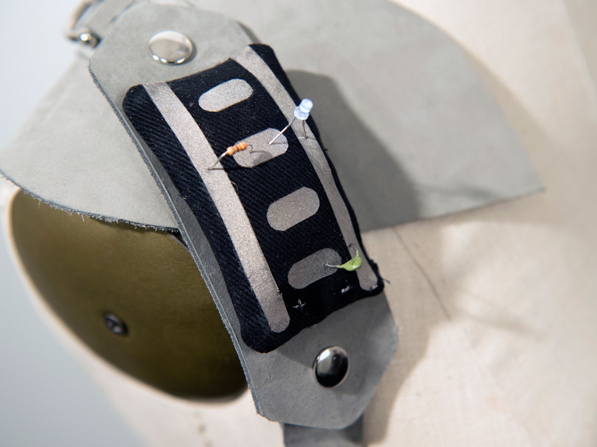
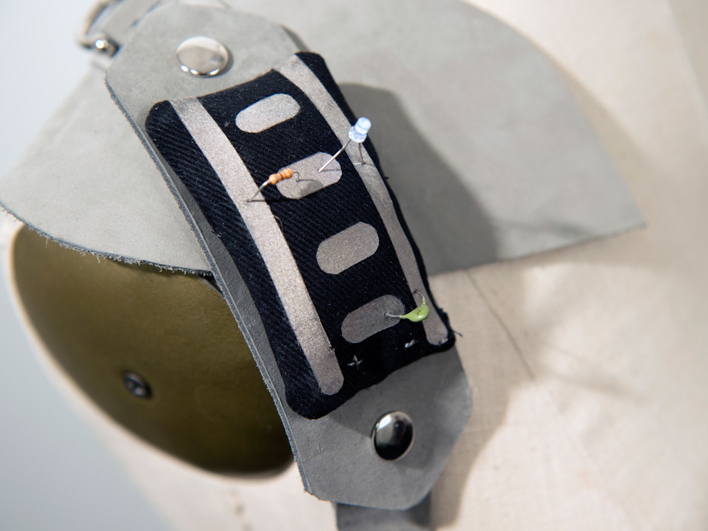

Lovelace
A utility harness for women who craft

This harness was inspired by the many amazing crafting women in my life. I set out to design a garment for the new era of crafters - women who make by choice, who know making is powerful, and who find their unique voices in the mediums and techniques of mothers and grandmothers. What I found was a truly diverse group of people with an impressive range of skills. I created a harness to store tools on the body that could evolve with the wearer.
 


Designed to Evolve —
This version was specifically tailored for someone who sews and works on soft circuitry. However, its pieces are modular and can be customized. Many crafters I spoke to switch between crafts and are continually acquiring new skills and new tools. The harness is adjustable and durable, and meant to grow and change with the owner over a very long period of time.

The Chatelaine —
Chatelaines were worn by women who were head of their household in the Victorian era. They contained all the small tools needed for their daily work often including keys, tools for sewing, time pieces, and small vials.
The chatelaine I designed for the Lovelace vest includes a magnifying glass, a tape measure, a thread cutter, and a continuity tester to check electronic connections and conductivity.